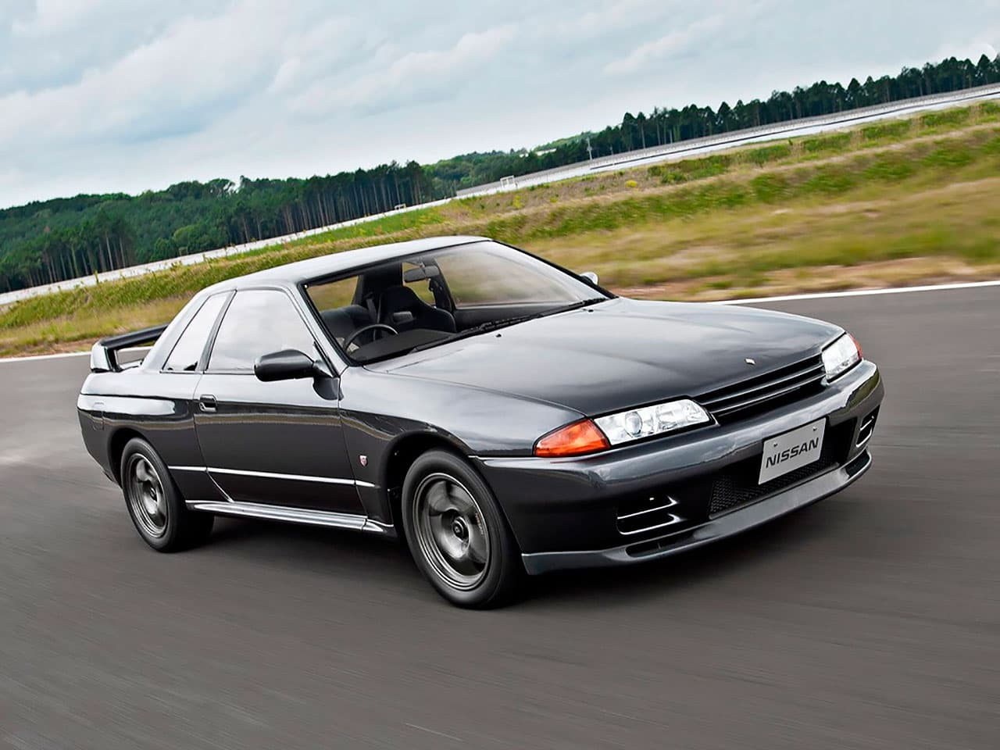
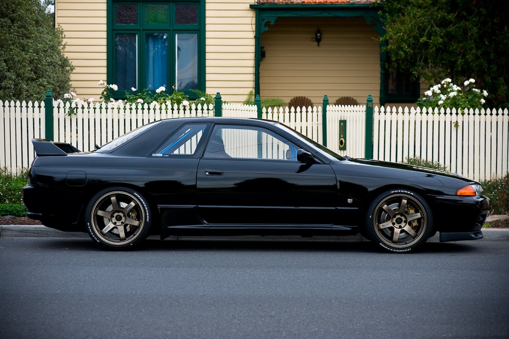
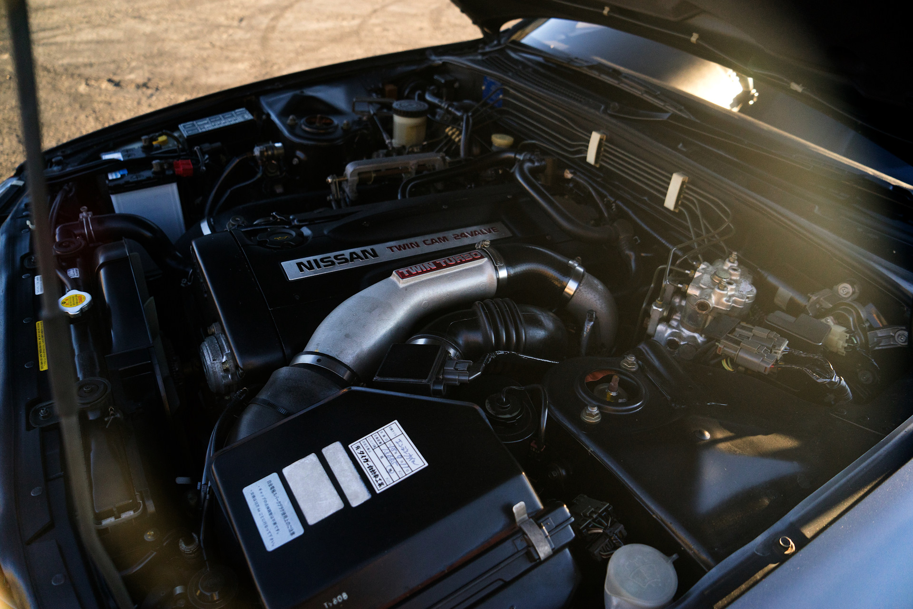
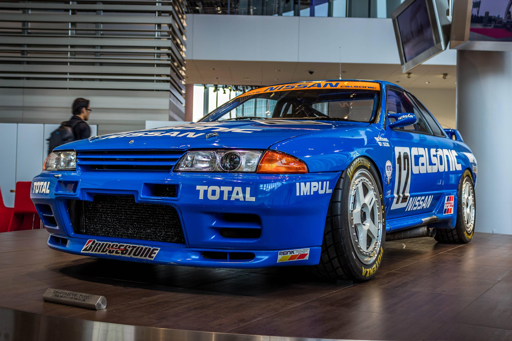

| ГЛАВНАЯ | ИНФО |
Звук запуска:
Nissan GT-R (R32) – японский спортивный автомобиль D-класса производимый компанией Nissan. R32 является восьмым поколением линейки Skyline, которое появилось в 1989 году.
Стандартные R32 комплектовались модернизированными 6-цилиндровыми рядными двигателями серии RB и 4-цилиндровыми CA для базовой версии GXi. Большинство моделей оснащались системой HICAS. Версия с двигателем объёмом 2.5 л стала одним из первых японских автомобилей с 5-ступенчатой автоматической трансмиссией. Система ABS предлагалась как опция (за исключением версии GT-R), вискомуфта LSD в заднем дифференциале была в стандартной комплектации для всех моделей с турбонаддувом и в списке опций для всех остальных версий кроме GXi.
Версия GT-R (BNR32) появилось позже в том же году. Автомобиль оснащался электронного системой полного привода 4WD ATTESA ETS (англ. Advanced Total Traction Engineering System for All Electronic Torque Split). Её особенностью являлось то, что при появлении пробуксовки задних колес, подключались передние колеса, которым передавалось около 50 % крутящего момента, что позволяло компенсировать потери при пробуксовке. В основе же автомобиль оставался заднеприводным.
Система HICAS - система, обеспечивающая при воздействии рулём поворот не только передних, но и задних колёс с помощью гидравлики, благодаря чему улучшается управляемость автомобиля при заносе и увеличивается безопасная скорость прохождения поворотов, получившая приставку Super, была модернизирована и управлялась уже с помощью электроники.
Автомобиль питался 2.6 литровым 6-ти цилиндровым рядным двигателем с двойным наддувом, который мог выдавать 500 л.с. мощности, хотя официально были заявлены 278 л.с. Максимальная скорость – 246 км/ч, а разгон до сотни – 5.3 секунды.
Одержав в кольцевом чемпионате JTCC 29 побед в 29 гонках, выиграв 4 чемпионата подряд с 1990 по 1993 годы и поставив новый рекорд времени прохождения Северной петли Нюрбургринга для серийных машин, автомобиль доказал своё превосходство.
Первоначально из-за омологационных требований на GT-R устанавливались 16-дюймовые колеса, что ограничивало размер и эффективность тормозных дисков. После изменений в гоночном регламенте, разрешивших использование 17-дюймовых колес, в феврале 1993 года была выпущена версия GT-R V-spec с 17" колесами BBS и увеличенными тормозными механизмами Brembo. Автомобиль также получил активный задний дифференциал. Годом позже выпущена V-Spec II, отличавшаяся более широкими шинами.
Всего было выпущено 313 491 автомобилей модели R32, из них 43 937 автомобилей серии GT-R.